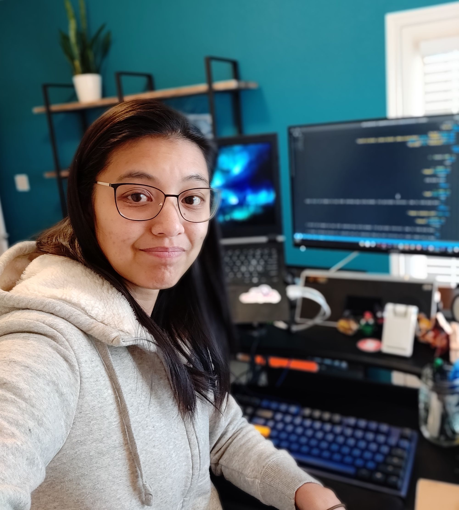

Jessica Chan
An inspiration to look up for.

Jessica Chan also known as Coder Coder in youtube, is one of the
youtubers I've discovered who gives practical tips and also career
advices for those who are seeking to be a web developer.
About Jessica Chan
-
Joined youtube Dec.15, 2017 and currently have 120k subscribers with
1.9m total views.
-
Made more than 10 helpful and inspiring articles regarding web
development on her website.
- Started HTML and CSS during highschool
- Majored Photography
-
Her first job that is coding related was a data entry position which
she found in craigslist.
- Does have 6-8 years experience on web development
-
Currently a freelance worker that inspires and shares her knowledge to people who wants to learn
web development.
" If you’re in the process of learning how to code, you might be
stressed about…
… feeling like you’re not learning fast enough.
… frantically looking up everything on Stack Overflow every
single day.
… battling impostor syndrome big time.
Let me tell ya something. I was there too.
~Jessica
If you have time, you should read more about her experience on her
Website.